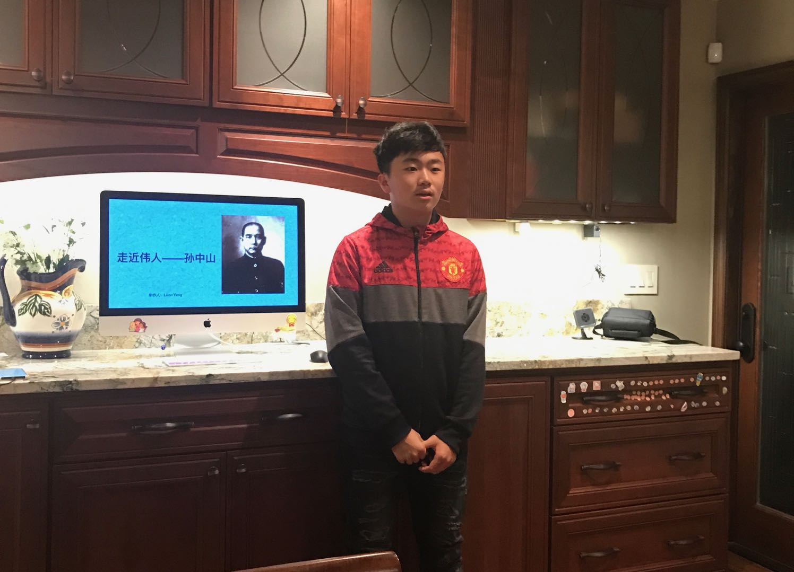
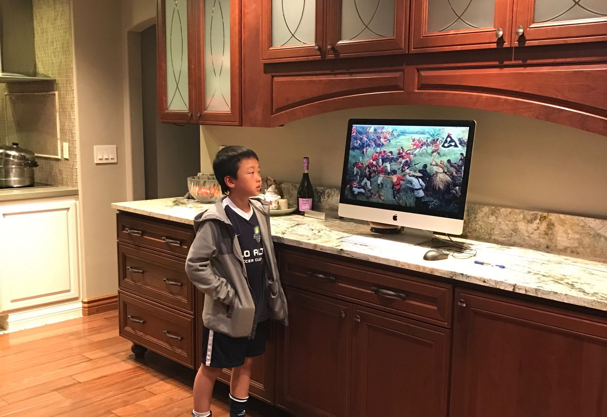
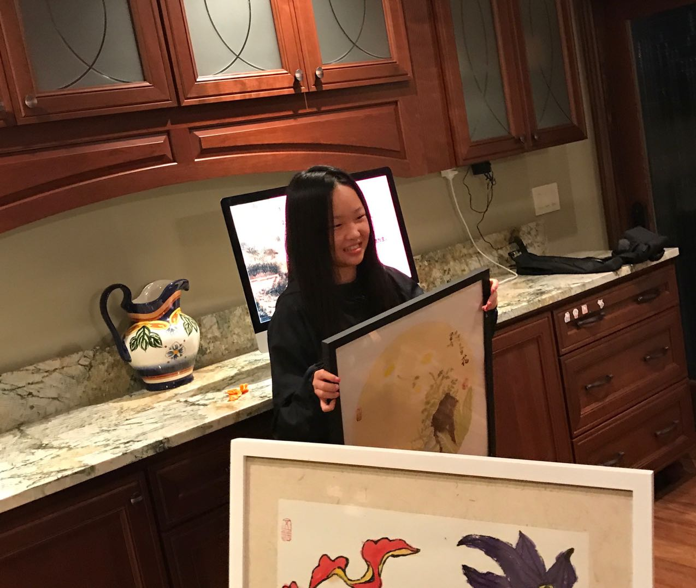
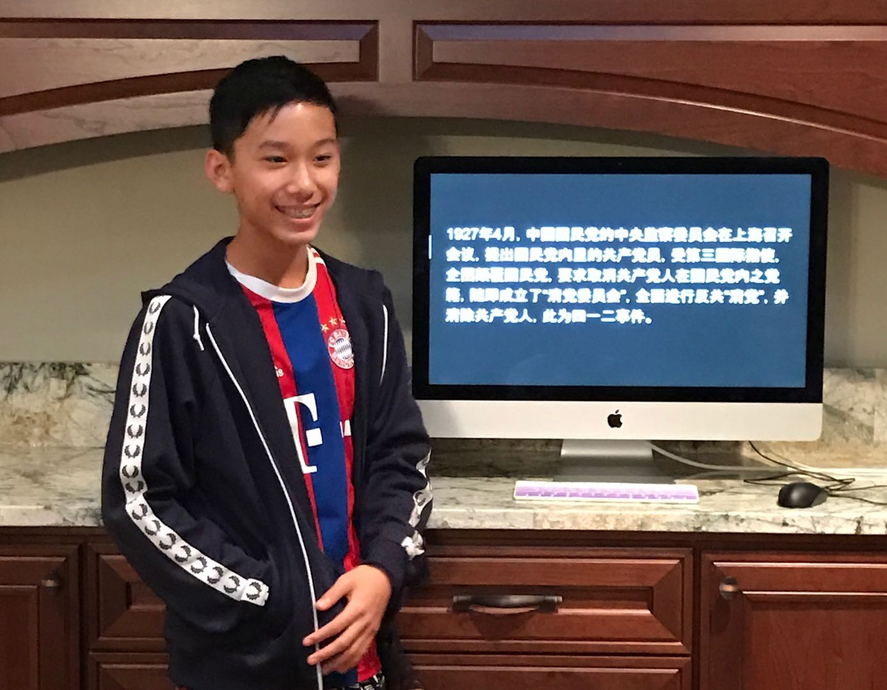
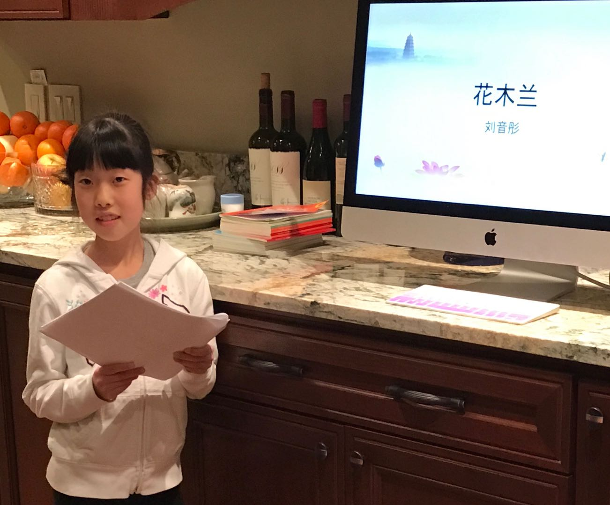
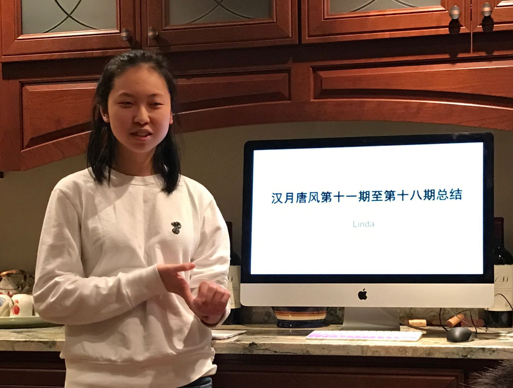
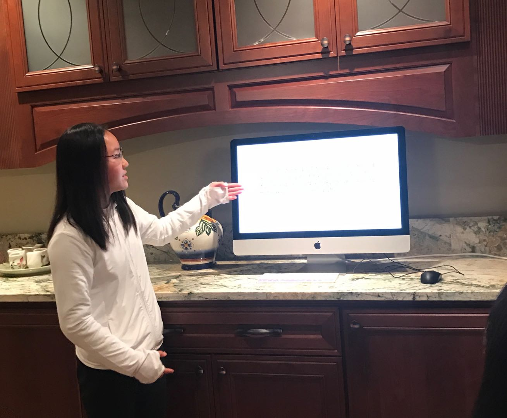

Chinese History and Culture Organization (CHHC) is an organization organized independently by students from middle school and high school. This organization began on August 19th, 2017, which mainly focuses on contributing Chinese culture within the community. As of now, this club has already carried out 33 events with a total of 67 lectures.